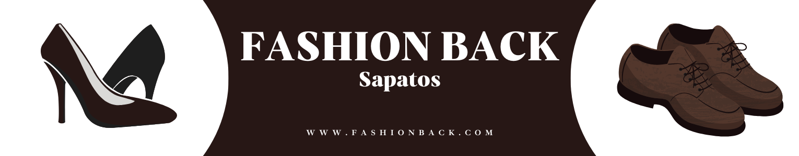

Tênis da linha All Star Linha Premium, o mais tradicional da marca Converse, Um estilo clássico que nunca sai de moda. O All Star é super versátil.
+CarrinhoApós sua popular colaboração com o Nike Air Force 1 com Swooshes mix-and-match, Travis Scott continuou seu reinado como um dos colaboradores mais quentes do mundo do tênis em 2018 com o Air Jordan 4 "Cactus Jack".
+CarrinhoAir Jordan 1 Hight Travis Scott Uma colaboração entre a marca Travis Scott e a Jordan, o 'Mocha' retrô Travis Scott x Air Jordan 1 Retro High apresenta um Swoosh de tamanho grande no lado lateral. A construção de couro branco caído e camurça Dark Mocha é acentuada pelas marcas University Red Cactus Jack e Nike na língua, enquanto o calcanhar ostenta o logotipo do rosto de Scott de uma maneira gravada.
+CarrinhoO Travis Scott x Air Force 1 Low Cactus Jack é uma criação única com as dicas utilitárias da marca registrada do rapper. Lançada em novembro de 2019, esta edição tem cabedal estampado assim como SB Dunk Low, no robusto Air Foce!
+Carrinho